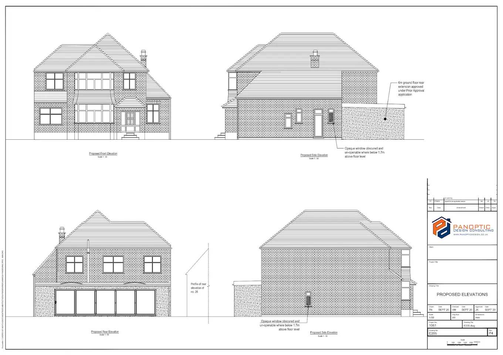

Structural, architectural and approvals. Under one roof.
Most residential projects need structural input, architectural drawings and a clear approvals route. Panoptic brings those disciplines together into one coordinated package for homeowners, architects and contractors across London and the South East. One point of contact, drawings aligned with calculations, and clear communication from first enquiry through delivery.

Signed and stamped calculations, steel and timber design, foundation design, and structural drawings - for residential projects from small beam replacements to full new builds.
Where relevant, we consider value engineering, reuse of existing structure and practical design choices that reduce waste and unnecessary cost.
OutputsCalcs pack
FormatPDF + CAD
Turnaround2 weeks
Signed byChartered SE
Typical scope
- Steel beam design for load-bearing wall removals (UB, UC, PFC)
- Foundation design - strip, trench fill, piled, and mini-piled
- Retaining wall design for basements and rear garden drops
- Existing structure assessment before major alterations
- Timber roof, floor and stud wall design
- Steel and concrete detailing for specialist frames


Planning and building regulation drawings for extensions, conversions and refurbishments. Practical layouts, drawn clearly so contractors can price with fewer assumptions.
StagesConcept → Build
DrawingsPlans, sections, elevs
3DOn request
Turnaround3–4 weeks
Typical scope
- Measured surveys and existing-condition drawings
- Concept sketches and optioneering for layout changes
- Planning application drawings and supporting documents
- Building regulation packages with construction details
- Window and door schedules, finishes schedules
- Tender-issue drawings for fair contractor pricing

Pre-application advice, full planning submissions, permitted development assessments, and certificates of lawfulness. We prepare and manage planning submissions where required.
Pre-app2–6 wks
Full planning8–10 wks
PD/CLP6–8 wks
AppealsCase by case
Typical scope
- Permitted development assessments and CLP applications
- Full householder and minor material amendment applications
- Pre-application engagement with the local authority
- Design and access statements where required
- Heritage statements for listed buildings and conservation areas
- Planning appeals - written representations

Full design packages for rear, side, wrap-around and double-storey extensions - coordinated from the outset so contractors can price from a clearer coordinated scope.
PackageArch + Struct
ApprovalsManaged where required
Build supportAs required
Timeline10–14 wks
Extension types we cover
- Single-storey rear extensions with steel frames and large glazing
- Side-return extensions for Victorian and Edwardian terraces
- Wrap-around (L-shaped) combined rear and side extensions
- Double-storey rear extensions with matching upper-floor alterations
- Basement conversions and light-well additions (selected projects)
- Garage conversions to habitable rooms

Dormers, hip-to-gables, mansards, L-shapes, and garage conversions. Structural design for steels and posi-joists, with drawings prepared for building control review and construction-stage decisions.
DormersPD / Planning
MansardsPlanning
Hip-to-gablePD often
Timeline8–12 wks
What’s included
- Measured survey of the loft space and existing roof structure
- Optioneering for layout, stair position and head-height compliance
- Steel beam and posi-joist design, including spreader padstones
- Party Wall assessments and notices where needed
- Fire regulations compliance (protected stair enclosure, FD30 doors)
- Dormer framing details and weather-tight construction drawings

Independent inspections for house purchases, cracking investigations, subsidence assessments and reports on past alterations. Written clearly, with a clear plan of action.
Site visitWithin 1 wk
Report5 working days
FormatPDF, photos
SignedChartered SE
Common report types
- Pre-purchase structural inspections (often requested by solicitors)
- Cracking investigations - differential movement, thermal, subsidence
- Bowing or bulging wall assessments
- Retrospective reports on unauthorised structural alterations
- Insurance reports for movement-related claims
- Vibration and construction-impact assessments
Worried about cracks specifically? See our crack inspection page
Request a quote
Not sure which services your project needs? Send us a few details.
Most enquiries receive an initial response within 48 hours, including likely approvals, timelines and a fixed fee where scope allows.